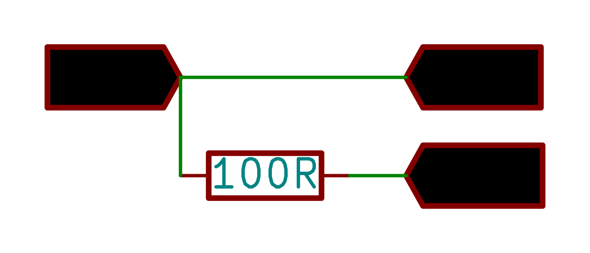
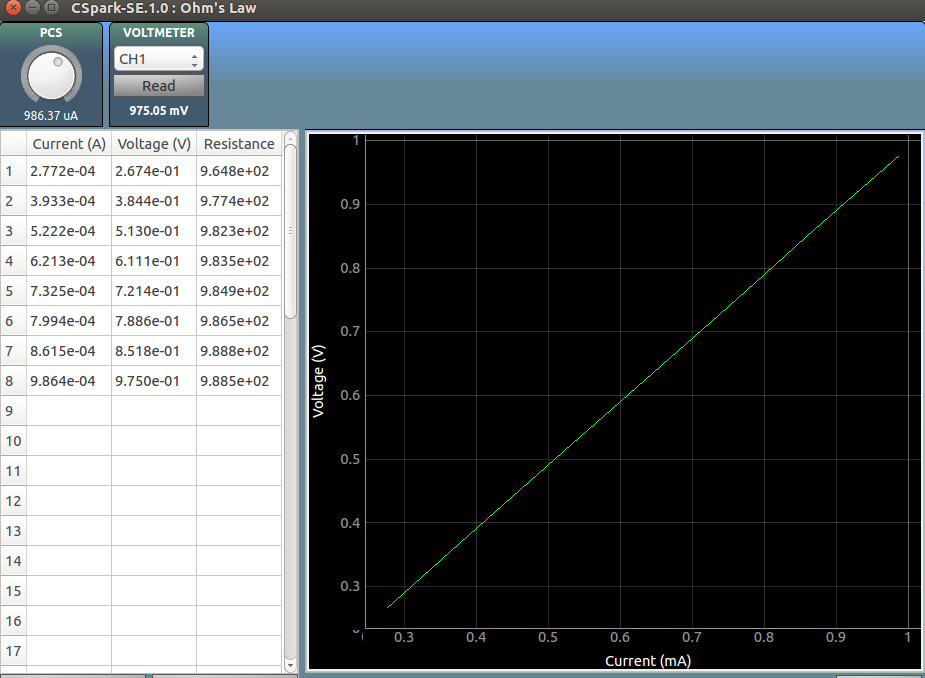

Ohm's Law
Introduction to Ohm's Law

Make the Connections as shown in the figure.
CH1 monitors the Voltage across the resistor.
PCS sets a suitable current flow through the resistor .
Calculate the voltage across the resistor for various different currents, and plot them.
Do Not use high value resistors, because the current source will not be able adjust to such high levels to ensure the right amount of current flow. Up to 200 ohms is ideal
Screenshot
